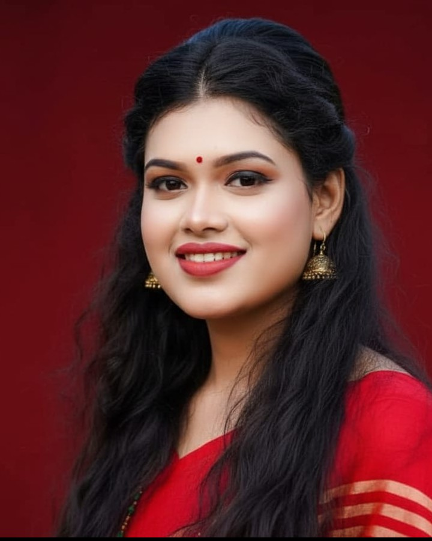

I'm Joyeta Banerjee, a Technical Project Manager from Khulna, Bangladesh. For 2+ years I've delivered software projects for international clients and enterprise teams, coordinating design, frontend and backend from first brief to final handoff.

Most projects slip for the same reasons: unclear scope, hidden risks and late feedback. My process is built to catch all three early.
Understand the client's goal, users and constraints. Market and competitor research.
Write the PRD: scope, deliverables, user stories and acceptance criteria.
Prioritise with RICE or MoSCoW, set milestones, assign owners, list risks.
Run sprints and short check-ins, track deadlines, unblock the team fast.
QA against requirements, client demo, feedback, and a clean handoff.
Live client work and enterprise delivery. Each one follows the same pattern: find the real problem, write it down, then plan the work around it.
Children's learning material was static and lacked visual engagement.
High-traffic tourism and marketing sites where design and code kept drifting apart.
Online stores losing customers in checkout and in confusing product flows.
Enterprise-scale ERP, where business users and engineers needed a shared language.
Requirements used to arrive scattered across calls and chats, causing rework.
Product thinking on two concepts: a business suite for SMEs and a pet-health tracker.
The documents I use to plan, bid and hand off projects.
My blueprint for the five phases: initiation, planning, execution, monitoring and closing, with risk assessment and stakeholder alignment.
Open in Notion → RFPProposalHow I scope, price and write technical proposals that win client projects.
Read sample → UXAnalysisA structured audit that turns design issues into prioritised, buildable requirements.
Read sample → UIHandoffDefining complex functional requirements for design-to-development handoff.
Open in Notion →End-to-end delivery of UI/UX, frontend and backend projects with Agile and Scrum: PRDs, sprint planning, QA and client reporting.
Full-lifecycle enterprise ERP projects: technical bidding, market research, requirements and documentation.
User guides, FAQs and knowledge-base articles written with designers and developers.
Coordinated content, design and tech for feature rollouts on an education platform.
First author, IEEE COMPAS 2025: multi-track audio fusion for emotion recognition.
Open to Technical Project Manager and Delivery roles, full-time or hybrid.